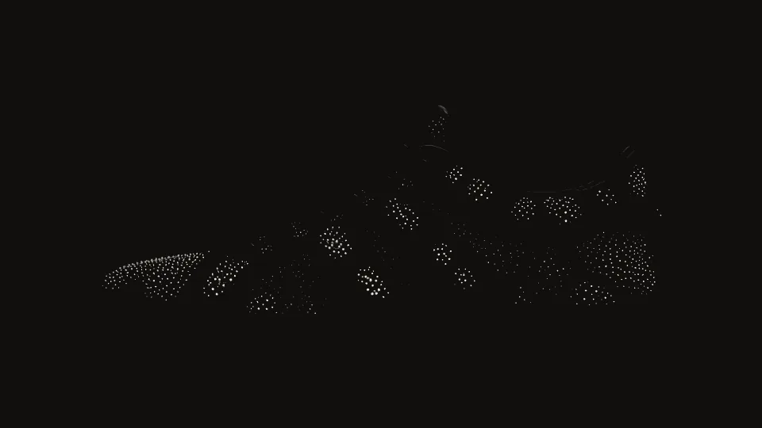
Mycelium One. A sneaker grown from mycelium, 500 pairs to a strain.
Grown, not made.
As you scroll, nine days pass in the growing chamber. The mold is seeded with living culture, points of light in the dark. On day 3 each seed sends out threads; on day 5 the colonies meet and the pair takes its shape; on day 7 the threads stand up into a down. On day 9, instead of pressing it into leather, we stop the growth and keep the pair as it grew.
Drop 004 · Pink Oyster Pleurotus djamor
Mycelium One
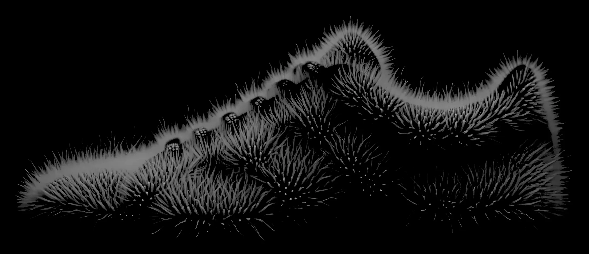
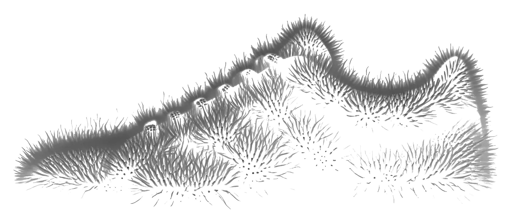
1 2 3Mycelium is usually pressed flat, into a leather. We dry ours standing, on day 9. The growth stops and the down stays.
No two pairs grow alike.
Each pair carries a mark grown from its number, and the spore print its strain left in the chamber. Both are printed on its box. Slide through the drop.
Pair 0413of 500
Next to be seeded. It could be yours.
Yours starts tomorrow.
A drop is not a stock. Your pair does not exist yet: reserve it today and it grows for you, while you watch.
- Tomorrow, 09:00
We seed pair 0413 in its mold. The number is yours from then on.
- Every morning
We send you its photograph from the chamber. Nine mornings, nine photographs.
- Day 9
We open the chamber, dry the pair standing, and ship it to you.
Pair 0397, nine mornings
It left the chamber last Thursday.
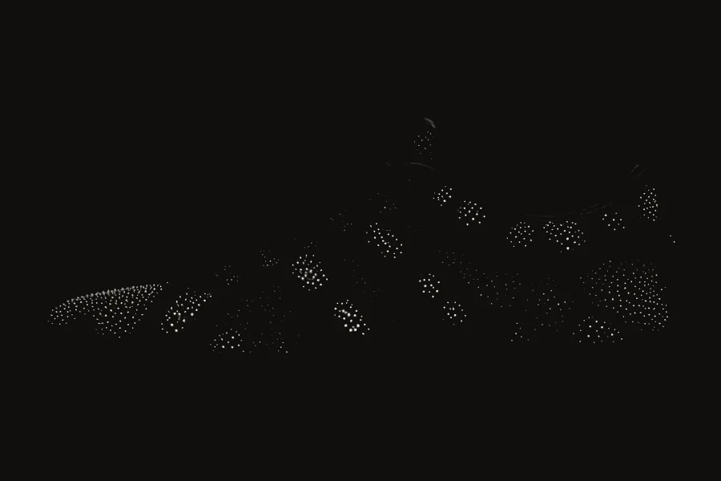
Day 1Seeded
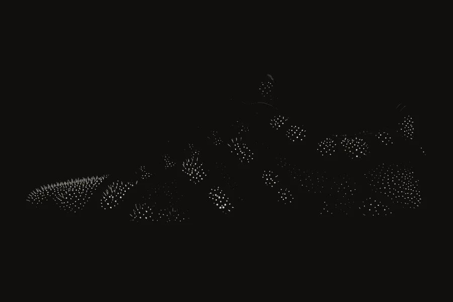
Day 2Waking
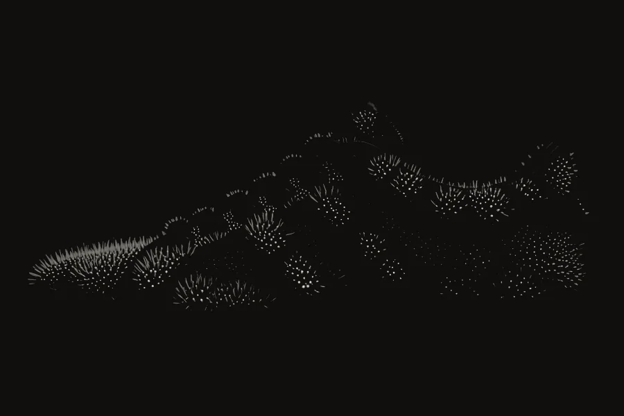
Day 3First threads
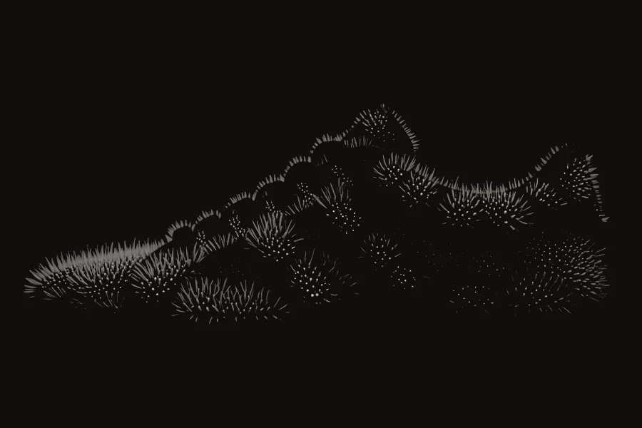
Day 4Reaching out
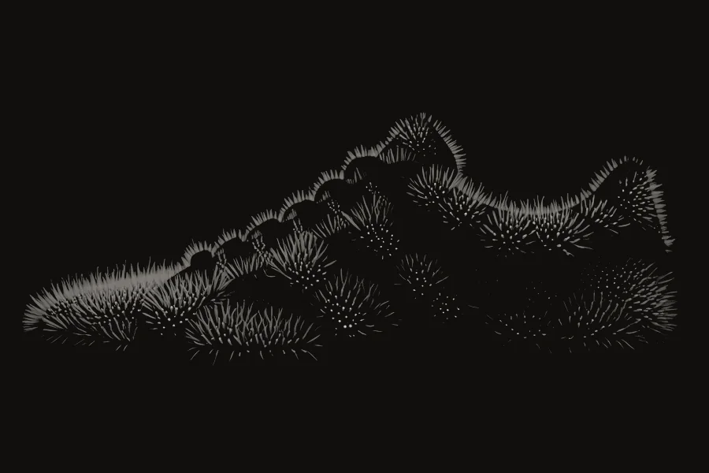
Day 5Colonies meet
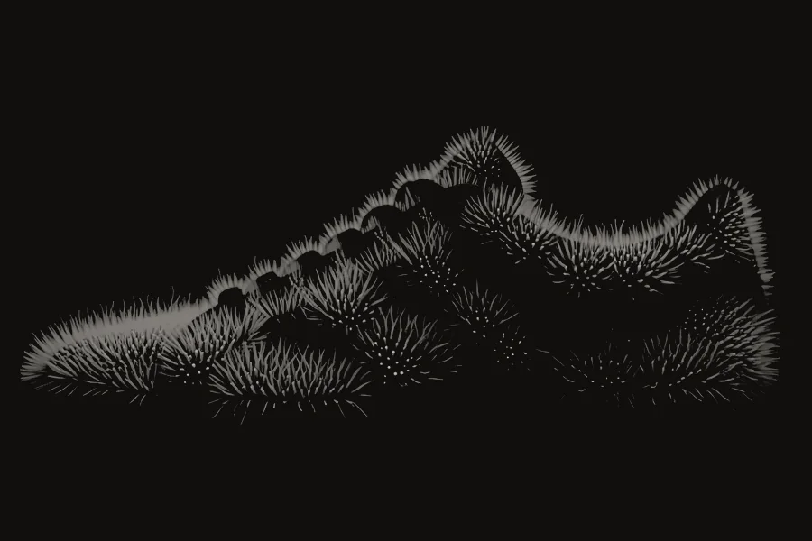
Day 6Closing up
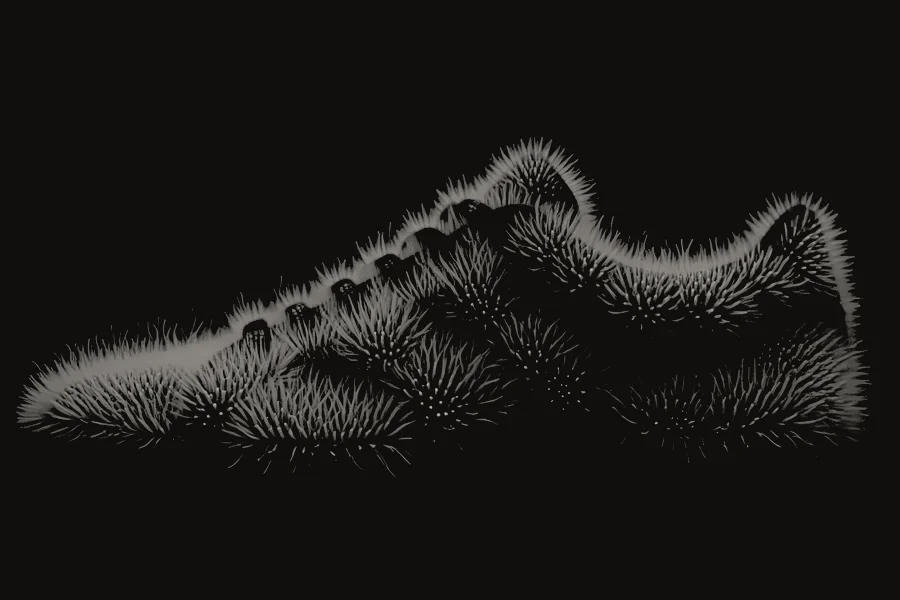
Day 7Down stands
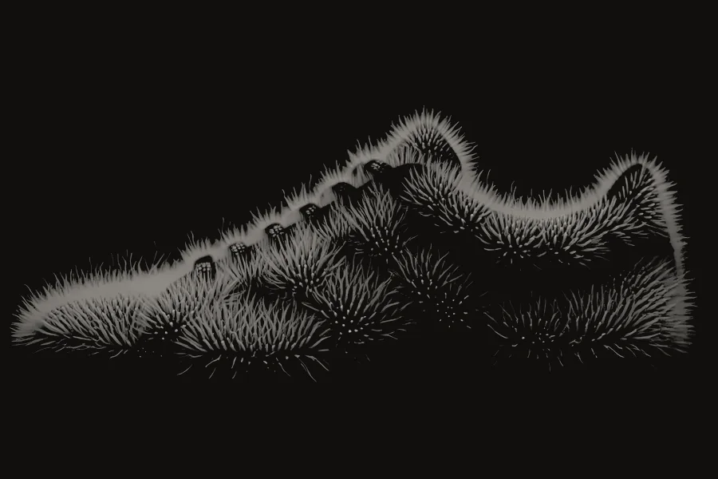
Day 8Thickening
Day 9Dried, shipped
Before you ask.
Can it get wet?
Yes. We wax the down with beeswax on day 9, so rain beads on it. Do not soak it, and let it dry away from heat.
Does it smell of mushroom?
Faintly, for about a week, like a forest floor after rain. Then of nothing.
How long does it last?
Two to three years of daily wear. The down flattens where you walk and stays standing elsewhere. We resole each pair once, free.
Is it still alive?
No. Drying it on day 9 stops the growth for good. Nothing will grow in your wardrobe.
What if my size is gone?
Each strain is grown once, in 500 pairs. Leave your email at the foot of this page and we tell you when the next one seeds.
Do I have to bury it?
No. Send it back when it is worn out. We compost it and take €40 off your next pair.
Bury it.
Worn out, the pair goes into the ground, laces and all. Ninety days later it is soil.
As you scroll, ninety days pass underground. The buried pair lies in the soil. By day 30 the threads of the soil have reached it and spread through it. By day 60 its felt is gone and the threads keep its shape. On day 90, oyster mushrooms of its strain fruit above the place where it lay.